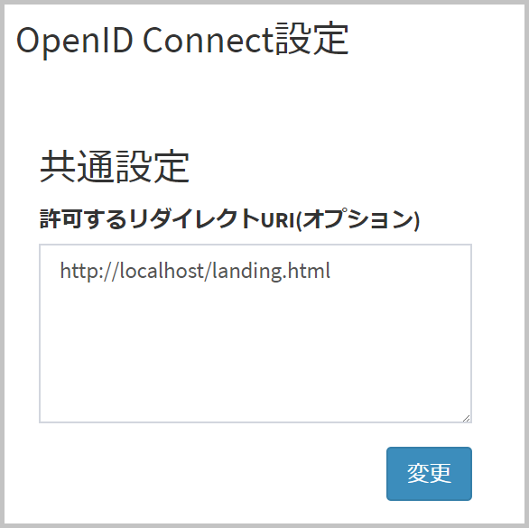

4.15. テナント設定 - OpenID Connect設定¶
概要¶
OpenID Connect に関する設定を行うことができます。
本設定は、テナント認証方式が「通常認証+OIDC認証」の場合のみ、表示されます。
表示・設定には、アプリケーション管理者以上の権限が必要です。
共通設定¶
許可するリダイレクト URI の設定¶
OpenID Connect 認証結果を受け取る URI を記載します。
これは、攻撃者が OpenID Connect 認証時にリダイレクト URI に不正な値を指定して、ワンタイムトークンが悪意のあるサイトに送信されること(Covert Redirect 攻撃)を防ぐために必要です。
OpenID Connect 認証時に本設定と異なるリダイレクト URI を指定した場合は、 OpenID Connect 認証が失敗します。
下記のように設定します。
{kind=link}
カンマや改行区切りで、 URI を複数指定すること可能です。
また、 ローカルホスト (http://localhost:~) で受け取る場合は記載不要です。
OP リスト¶
以下の OpenID Connectプロバイダ (OP) に関する設定が可能です。
- adfs
- other
other は、Google、ADFS 以外の OP と接続する場合に選択してください。(ただし、OpenAM 以外の OP は動作保証範囲外となります)
例えば、Google と ADFS に OpenID Connect 連携する場合は、google と adfs の設定を行ってください。
「編集」を選択すると、編集画面に遷移します。
OP 編集画面¶
OP 編集画面では、以下が設定可能です。
Client ID
- OP によって発行された、クライアントの固有IDです。
Client Secret
- OP によって発行された、クライアントのシークレットキーです。
OP Configuration設定方法
- 「Discovery」と「JSON」のどちらかを選択可能です。
- OP が OpenID Connect Discovery に対応している場合は、「Discovery」を選択してください。
- google の場合は、「Discovery」のみ選択可能です。
Discovery URL
OP Configuration設定方法で「Discovery」を選択すると、設定可能となります。
各 OP の値は以下となります。
google :
https://accounts.google.com/.well-known/openid-configuration
adfs :
https://{adfs_servername}/adfs/.well-known/openid-configuration
other (OpenAM) : スキーム (http/https) は 構築環境に依存します
https://{openam_servername}/openam/oauth2/.well-known/openid-configuration
OP Metadata
- OP Configuration設定方法で「JSON」を選択すると、設定可能となります。
- 入力形式は、 OpenID Connect Discovery 1.0 を参照してください。
- 以下のフィールドのみ、有効となります。
- issuer (必須)
- authorization_endpoint (必須)
- token_endpoint (必須)
- userinfo_endpoint (オプション)
- scopes_supported (オプション)
JWK セット
- OP Configuration設定方法で「JSON」を選択すると、設定可能となります。
- jwks_uriから取得するJWKセットと同様のJSON形式で入力してください。